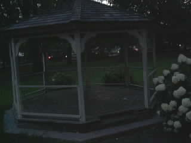
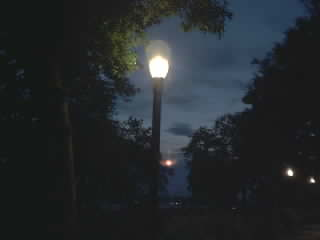
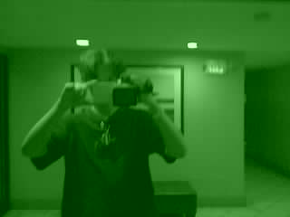
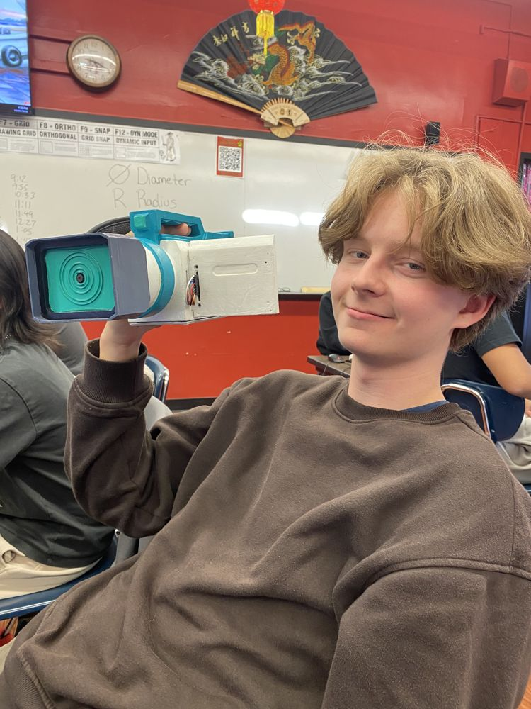

Portfolio · 11 projects
Obsessed with all things sci-fi.
I'm Michael Sumin, a student at Staten Island Tech who builds wearable props, walking robots, and desktop assistants. This site shows how each one works, the decisions behind it, and what broke on the way.
| No. | Project | Status |
|---|---|---|
| 01 | Sandevistan Spine | In development |
| 02 | 10-Servo Biped Robot | Walking; tuning for speed |
| 03 | Cyberpunk Camcorder | Running, v9.6 |
| 04 | JARVIS Voice Assistant | In daily use |
| 05 | Quadruped Robot | In progress |
| 06 | Mantis Blades | Built |
| 07 | Monowire | Write-up coming |
| 08 | CNC Machine Repair | Write-up coming |
| 09 | Speaker Build | Write-up coming |
| 10 | bambu-check | Built |
| 11 | Makerspace Projects | Ongoing |
The Work
Eleven projects, sorted into hardware, software and shop work.
Through the lens
Photos I took with the camcorder I built, unedited, at its native 320 x 240.



About

Hey! I'm Michael, a student at Staten Island Technical High School. I build things that bring my interests to life: robots, wearable electronics, desktop assistants, and anything else that grabs me.
I love sci-fi. A lot of my projects start with tech from shows and games that I want to see work for real, like the Sandevistan spine and Mantis Blades from Cyberpunk 2077.
I want to study mechanical engineering because it blends everything I like doing: electronics, CAD and design.
- CADFusion, parametric parts, joints and interference checks
- FabricationFDM printing (Bambu H2D, dual material), finishing and paint
- ElectronicsESP32, servos, IMUs, addressable LEDs, I2S audio, LiPo power
- CodePython, C++ (Arduino), JavaScript, Flask, pytest